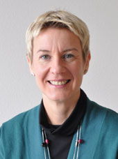
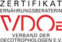

Astrid Baumeister
Ernährungsberatung
- individ. Ernährungsberatung und -therapie
- Kurse, Seminare, Schulungen
- Vorträge
- betriebl. Gesundheitsförderung
- Projekte
Tipp:
Erkundigen Sie sich bei Ihrer Krankenkasse, nach einem
Zuschuss zur Ernährungsberatung/ Ernährungstherapie
Naturheilkunde
In der Naturheilkunde arbeite ich vorwiegend mit phytotherapeutischen und
spagyrischen Heilweisen.
Der Begriff Spagyrik leitet sich aus dem
Griechischen ("Spao"= trennen, lösen, scheiden;
"Ageiro" = binden, vereinen) ab. Seit Paracelsus wird der Begriff
für die alchemistische Herstellung von Heilmitteln verwendet. Es
handelt sich um spezifische Aufbereitungsmethoden von Heilpflanzen,
Mineralien dun Metallen, mit dem Ziel ganzheitlich wirksamen Arzneien zu
erhalten.
|

Astrid Baumeister
Dipl- Oecotroph., Heilpraktikerin
Gründungsmitglied des
"Qualitätszirkel
Ernährungsprofis München und Umland"
| Ernährungsberaterin VDOE e.V. |
 |
Quetheb-Registrierung: Q1006EB-0419
Tel: 089 / 14 86 97 13
Termine nach Vereinbarung
|